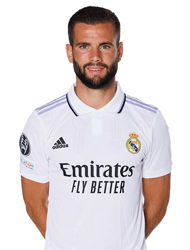

Thibaut Courtois
- Lugar de nacimiento: Bree (Bélgica)
- Fecha de nacimiento: 11/05/1992
- Posición: Portero
- Peso: 96 kg.
- Altura: 2,00 m.
Daniel Carvajal Ramos
- Lugar de nacimiento: Leganés (Madrid)
- Fecha de nacimiento: 11/01/1992
- Posición: Defensa
- Peso: 73,5 kg.
- Altura:1,73 m.
David Alaba
- Lugar de nacimiento: Viena (Austria)
- Fecha de nacimiento: 24/06/1992
- Posición: Defensa
- Peso: 78 kg.
- Altura:1,80 m.

José Ignacio Fernández
- Lugar de nacimiento: Madrid
- Fecha de nacimiento: 18/01/1990
- Posición: Defensa
- Peso: 76,3 kg.
- Altura:1,80 m.
Toni Kroos
- Lugar de nacimiento: Greifswald (Alemania)
- Fecha de nacimiento: 04/01/1990
- Posición: Centrocampo
- Peso: 76 kg.
- Altura:1,83 m.
Luka Modrić
- Lugar de nacimiento: Zadar (Croacia)
- Fecha de nacimiento: 09/09/1985
- Posición: Centrocampo
- Peso: 66,2 kg.
- Altura:1,72 m.
Eduardo Camavinga
- Lugar de nacimiento: Cabinda (Angola)
- Fecha de nacimiento: 10/11/2002
- Posición: Centrocampo
- Peso: 68 kg.
- Altura:1,82 m.
Federico Valverde
- Lugar de nacimiento: Montevideo (Uruguay)
- Fecha de nacimiento: 22/07/1998
- Posición: Centrocampo
- Peso: 78 kg.
- Altura:1,82 m.
Aurélien Tchouameni
- Lugar de nacimiento: Rouen (Francia)
- Fecha de nacimiento: 27/01/2000
- Posición: Centrocampo
- Peso: 82 kg.
- Altura:1,88 m.
Eden Hazard
- Lugar de nacimiento: La Louvière (Bélgica)
- Fecha de nacimiento: 07/01/1991
- Posición: Delantero
- Peso: 74 kg.
- Altura:1,75 m.
Karim Benzema
- Lugar de nacimiento: Lyon (Francia)
- Fecha de nacimiento: 19/12/1987
- Posición: Delantero
- Peso: 81,2 kg.
- Altura:1,85 m.